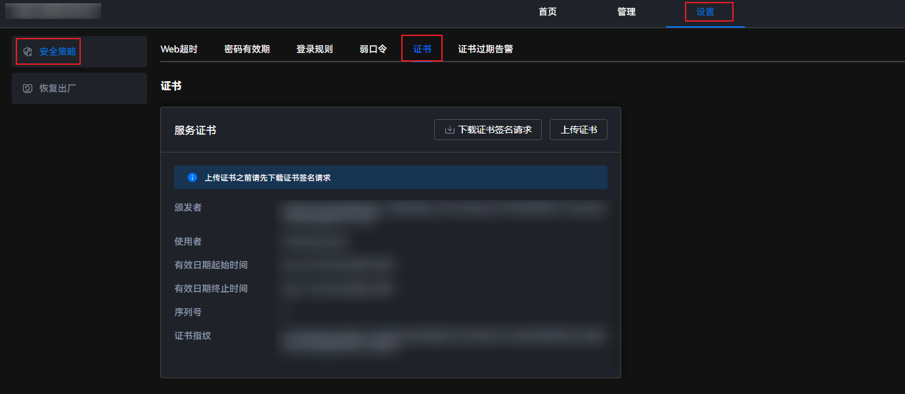
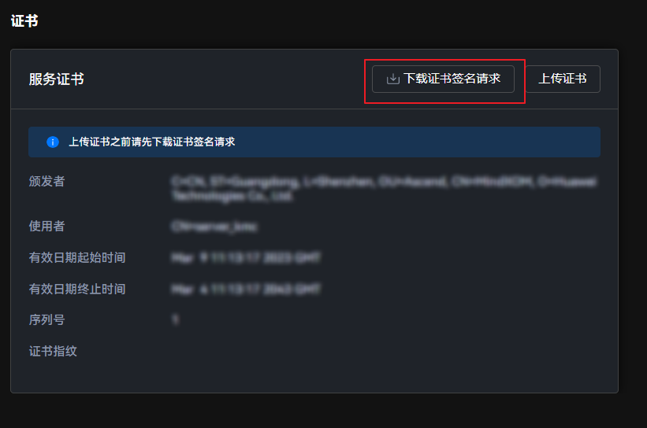
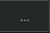

Atlas IES支持SSL服务器证书的导入、证书替换以及证书信息查询。
SSL证书通过在客户端浏览器和Web服务器之间建立一条SSL安全通道（访问方式为HTTPS），实现数据信息在客户端和服务器之间的加密传输，可以有效防止数据信息的泄露。SSL保证了双方传递信息的安全性，同时用户可以通过服务器证书验证所访问的网站是否真实可靠。为提高Atlas IES的安全性，需要用户导入自定义证书，并及时更新证书，保证证书的有效性，并在浏览器导入根证书。否则用户可能访问到伪造网站，导致用户名及密码被窃取，进而影响Atlas 500 A2 智能小站的整体安全。
上传自定义证书
- 在主菜单中选择。图1 服务证书页面
 - 在上传证书前，请单击“下载证书签名请求”，下载证书签名请求。图2 下载证书签名请求
 - 单击“上传证书”，进入上传证书界面。图3 上传证书

- 服务器证书由客户使用第三方软件自行生成，且生成时建议采用安全性较高的加密算法，例如RSA4096。
- 上传的证书文件不得大于10KB，目前仅支持.crt和.cer格式的证书。
- 证书名长度为1~255，可由大小写字母（a~z、A~Z）、数字（0~9）和其他字符（_.-）组成，且不含“..”，后缀只能为crt和cer。
- 单击“证书文件”后的，选择需要上传的证书。图4 上传证书文件

- 在“当前用户密码”文本框中输入当前账户密码。
- 单击“确认”。
页面上方弹出“证书导入后，您可以在合适的时间重启小站使之生效”提示说明框。

证书上传成功后，需要重启系统才能生效。